Pivots in Objects - World Coordinate Systems
Pivot Offsets in Unity
http://www.aclockworkberry.com/world-coordinate-systems-in-3ds-max-unity-and-unreal-engine/
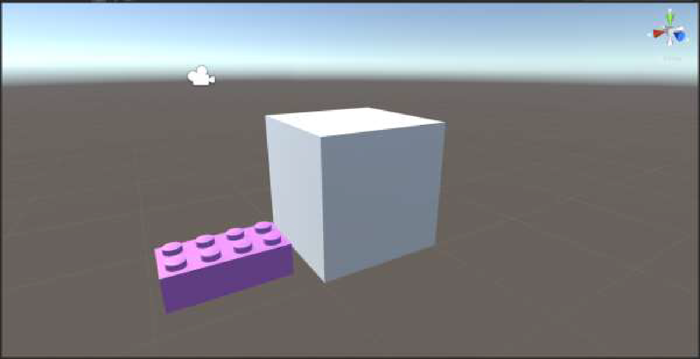
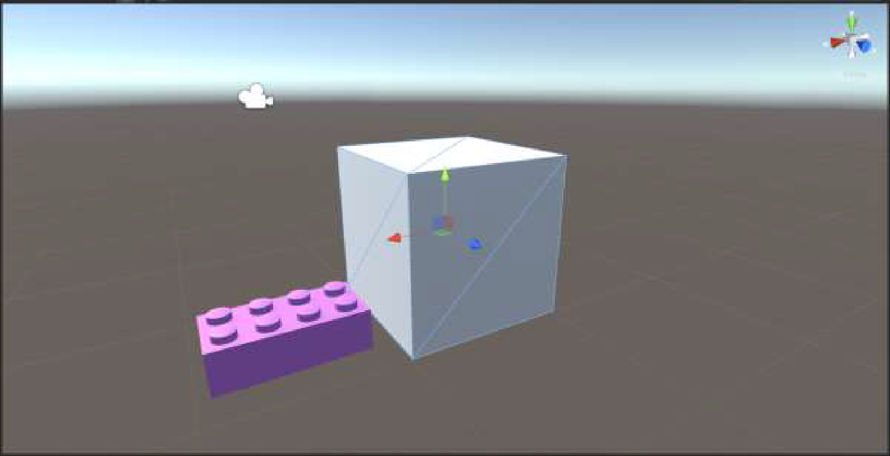
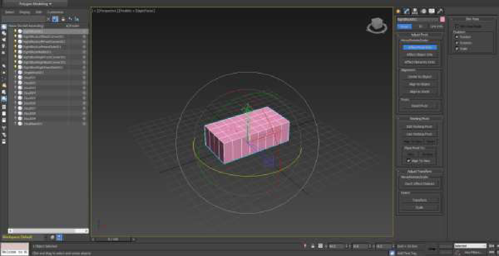
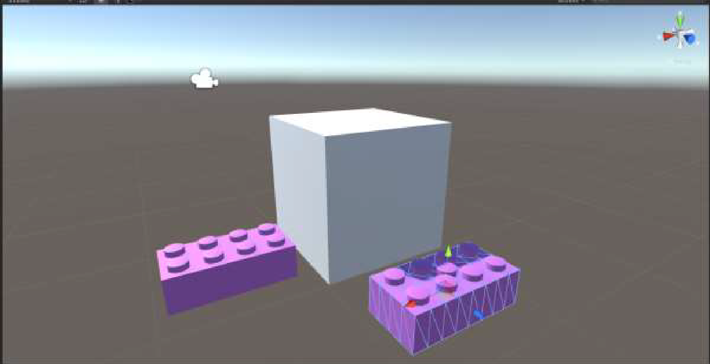
3ds Max World Coordinate System
3ds Max uses a right handed, z-up world coordinate system. Below you can see a test scene with the standard teapot and a textured quad (pivot shown in world coordinates). The front view has the Y direction pointing inside the screen.
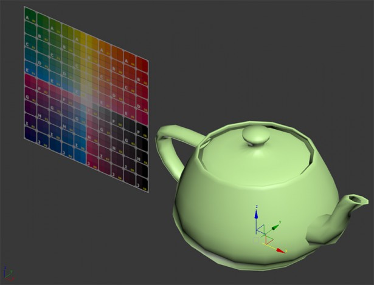
Unity 3D World Coordinate System
Unity 3D uses a left-handed, y-up world coordinate system. As you can see in the image below, when you import a mesh from 3ds Max, what you get is a very different orientation. There is a 90 degrees rotation around the X axis, which has an opposite direction compared to 3ds Max.
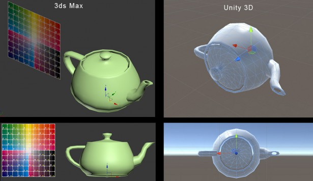
Unity 3D Axis Conventions
Below you can see the axis conventions for Unity 3D:
- Forward direction: Z axis
- Right direction: X axis
- Up direction: Y axis

Animation Principles 6-10
6. Straight Ahead Action and Pose-to-Pose Action
6. Straight Ahead Action and Pose-to-Pose Action - The two contrasting approaches to the creation of movement
Pose-to Pose – is when the animator carefully plans out the animation, draws a sequence of poses, i.e., the initial, some in-between, and the final poses and then draws all the in-between frames (or another artist or the computer draws the in-between frames). This is used when the scene requires more thought and the poses and timing are important.
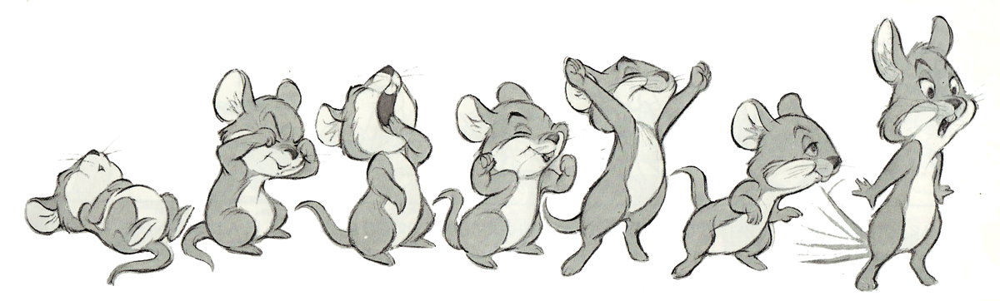
Straight Ahead– in hand drawn animation is when the animator starts at the first drawing in a scene and then draws all of the subsequent frames until he reaches the end of the scene. This creates very spontaneous and zany looking animation and is used for wild, scrambling action.
7. Slow In and Out
7. Slow In and Out - the spacing of the in-between frames to achieve subtlety of timing and movement
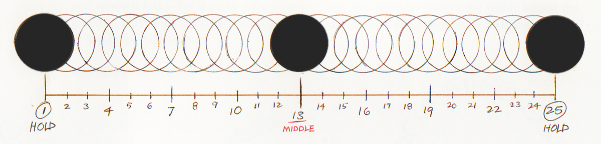
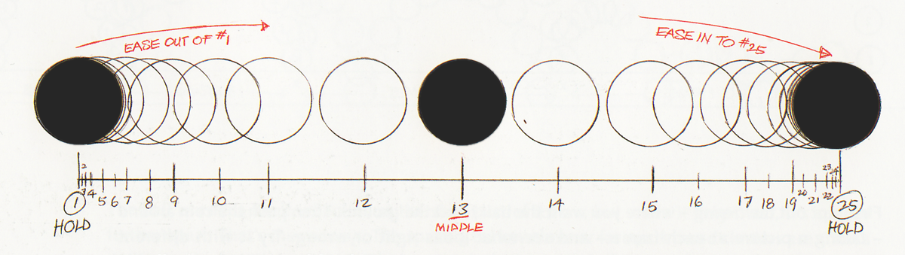
Speaker notes
his refers to the spacing of the inbetween frames at maximum positions. It is the second and third order continuity of motion of the object. Rather than having a uniform velocity for an object, it is more appealing, and sometimes more realistic, to have the velocity vary at the extremes. For example, a bouncing ball moves faster as it approaches or leaves the ground and slower as it approaches leaves its maximum position. The name comes from having the object or character "slow out" of one pose and "slow in" to the next pose.
This is usually achieved by using splines to control the path of an object. The various spline parameters can be adjusted to give the required effect. In 3D Studio this is controlled by the parameters Ease To and Ease From in the Key info window (from the Track info window). When these are zero, there is a constant velocity in either direction, i.e., to/from the keyframe. When Ease To is set to a higher value, the motion is faster as it leaves the previous keyframe and slows as it approaches the current keyframe. When Ease From is set to a higher value the motion is slower leaving the current keyframe and speeds up as it approaches the next keyframe. The tick mark spacing shows the velocity with closer tick marks indicating a slower rate and spaced out ones indicating a faster rate.
Examples:
Ease To/From both set to 0 (bounce0.flc)
Ease To/From both set to 50 (max value)(bounce1.flc)
There are other potential problems with spline controlled movements. Because of the nature of splines, there may be an overshoot effect, For example, look at box1.flc. The upper box was keyframed to just touch the top of the bottom box, but because of the properties of the spline curve, it overshoots and goes into the lower box. There are three other parameters that control the approach to/from keyframes. These are discussed below.
Reference: Doris Kuchanek and Richard Bartels, "Interpolating Splines with Local Tension, Continuity, and Bias Control", Computer Graphics 18:3, pp. 33-41, July 1984 (SIGGRAPH 84)
Tension
Tension controls the overall shape of the spline curve.
Continuity equally affects the angles at which the spline enters and leaves the keyframe.
Bias affects the overshoot or undershoot of the motion through the keyframe.
8. Arcs
8. Arcs - the visual path of action for natural movement – arcs are seen in computer animation as the function curve of object transformation. The more you know about traditional animation, the more you can ‘read’ the curves – a good example is the bouncing ball.
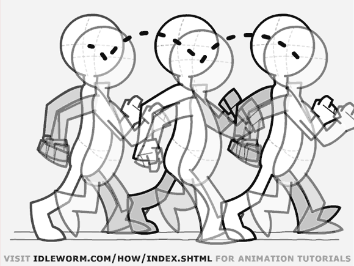
Speaker notes
Very few living organisms are capable of moves that have a mechanical in and out precision. Movements follow a circular path due to the springiness of muscles, tendons, and gravity and inertia forces.
9. Exaggeration
9. Exaggeration - Accentuating the essence of an idea via the design and the action
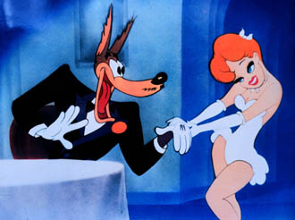
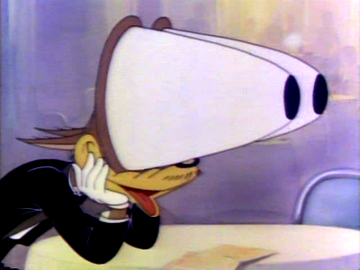
Speaker notes
Exaggeration does not mean just distorting the actions or objects arbitrarily, but the animator must carefully choose which properties to exaggerate. If only one thing is exaggerated then it may stand out too much. If everything is exaggerated, then the entire scene may appear too unrealistic.
When Walt asked for something to be more realistic, he meant a caricature of realism that seemed ‘real’
10. Secondary Action
10. Secondary Action - the action of an object resulting from another action – sometimes follow through actions delayed, as in Hair, a Tail, Whip, Wave or a Cape.
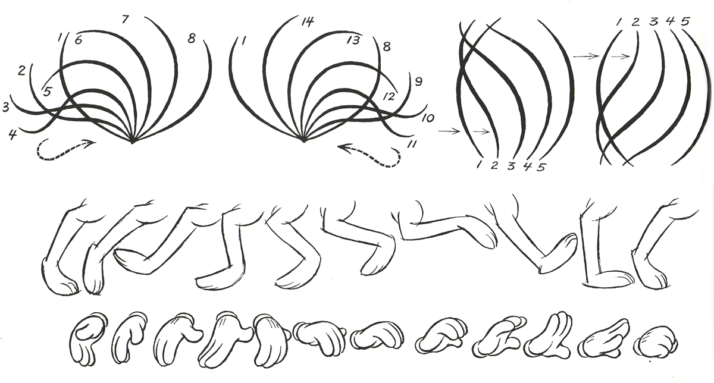

Speaker notes
This is an action that directly results from another action. It can be used to increase the complexity and interest in a scene. It should always be subordinate to and not compete with the primary action in the scene. An example might be the facial expression on a character. The body would be expressing the primary action while the expression adds to it. Another example would be the trailing electrical cord of Luxo, jr.
The one idea being put over in a scene can be fortified by subsidiary actions within the body. It should always be kept subordinate to the main action but supplement it (a bemused shake of the head). If it dominates, it is the wrong choice or staged improperly.
Secondary animation (or secondary motion) is the motion derived from primary motion, much like a ripple or jiggle of different parts of the body when a person walks. In Rocky, Sylvester Stallone is reported to have insisted that he really be punched to get the secondary motion correct, with his face distorted and rippling from the blow on the opposite side, and sweat flying off from the force of the blow.
Gravity, inertia, double pendulum.